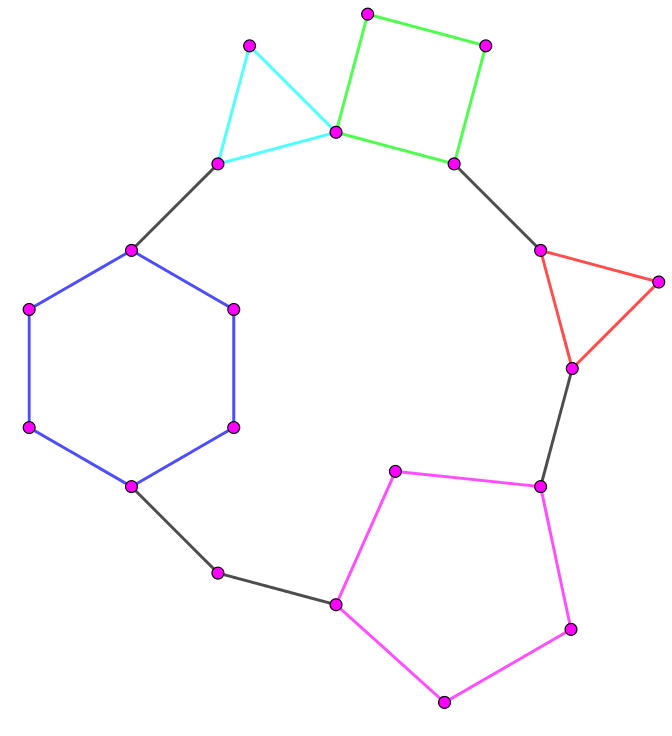

给定连通无向简单图 $G$，已知 $G$ 在删掉一条边后是一颗仙人掌，求 $G$ 的生成树个数。结果对 $998244353$ 取模。
第一行包含两个正整数 $n, m$ ($1 \leq n \leq m \leq 5 \times 10^5$)，表示图 $G$ 的点数和边数。
接下来 $m$ 行，每行两个正整数 $u, v$ ($1 \leq u, v \leq n$)，描述 $G$ 中的一条边。
输出一行一个整数，表示图 $G$ 的生成树个数对 $998244353$ 取模的结果。
对于 (连通) 无向图的生成树的个数 (记作 $ST \left( G \right)$)，不难发现并证明如下结论：
设 $G$ 由点双连通分量 $G_1, G_2, \cdots, G_B$ 构成 (不同的点双之间允许有一个公共点)，其中 $G_i$ ($1 \leq i \leq B$) 为点双连通图，则 $ST \left( G \right) = ST \left( G_1 \right) \cdot ST \left( G_2 \right) \cdot \cdots \cdot ST \left( G_B \right)$。
而对于一个仙人掌来说，它的 “点双连通分量” 分解后的结果是非常简单的 —— 只有桥边和圈，而对于一条桥边，它的生成树个数显然是 $1$，而对于一个大小为 $c$ 的圈 $C$，则有 $ST \left( C \right) = c$。
因此现在考虑仙人掌上加一条边的结果。
先退一步讲，假设我们已经知道了 $G'$ 是在一个仙人掌 $G$ 加上加了边 $e = \left( u, v \right)$ 所得到的图，考虑如何计算 $ST \left( G' \right)$。(事实上在官方数据中把输入中的最后一条边删掉就一定是仙人掌了，有点 DD)
由生成树的基本结论，可知 $ST \left( G' \right) = ST \left( G \right) + ST \left( G' \cdot e \right)$。而此题中 $ST \left( G \right)$ 就是仙人掌的生成树，是一个已经解决的问题，从而只需计算 $ST \left( G' \cdot e \right)$。
先不考虑这件事，考虑在仙人掌上加一条边所得到的图 $G'$ 具有怎样的结构。
不妨设 $u$ 是仙人掌的根节点，考虑 $u \leadsto v$ 在点双缩点树 (圆方树) 上的路径，$u \to \color {fuchsia} \alpha \to a \to \color {fuchsia} \beta \to b \to \cdots \to c \to \color {fuchsia} \gamma \to v$，其中 $\color {fuchsia} {\alpha, \beta, \gamma}$ 为环点 (方点)。那么，考虑加入边 $\left( u, v \right)$ 后，$\alpha, \beta, \cdots, \gamma$ 所对应的点双连通分量将会合并成一个 “大” 点双连通分量，而其余点双连通分量不受影响。
这里要注意的是，如果 $u, v$ 本身就在同一个点双 (环) 中，那么并不会产生点双连通分量的合并，此时情况也比较简单，相当于某个环变成了 “两个点之间三条不相交路径” 的结构，设这三条路径的长度为分别为 $a, b, c$，则容易得到该点双的生成树的个数就是 $a b + b c + c a$。
那么现在就不考虑平凡的情况了，设有大于 $1$ 个点双组合成了一个 “大点双”，而组合的方式就和 “串项链” 一样，把每个环或单点看成珍珠用一个大圈再 “串” 起来，如下图所示：
在这个 “大点双” 中，任意删去一条桥边 (上图中的黑色边) 即可得到一个仙人掌，因此我们可以规定 $e$ 就是其中某条黑色边。接下来有两种思路：
考虑求 $G' \cdot e$，即强制 $e$ 在生成树上的生成树个数。
那么我们假设去掉 $e$ 后 (可以得到俩连通块) $u$ 所在的连通块连了 $A$ 个小点双，$v$ 所在的连通块连了 $B$ 个小点双，内部还是环长的串乘积，而中间断开的部分只需要讨论是桥边 ($1$ 倍系数加入答案) 还是环 (小环被大环分为两段，可以在两段中各取一条边断掉，贡献系数为两段长度的乘积)，即可得到答案。
仔细观察 $G' \cdot e$ 到底是什么，其实就是原问题的一个子问题！
因此我们压根就不需要对某一条桥边进行特别的讨论：只需从一个点开始 "延展" 即可，具体地，设环长乘积为 $P$，则每条桥边会产生 $P$ 棵生成树，而每个环，设两段的长度分别为 $s, t$，那么会产生 $\dfrac {s \cdot t} {s + t} \cdot P$ 棵生成树，最后相加即可。
于是统计答案的部分可以在 $O \left( n \right)$ 时间内完成。
现在来解决这个历史遗留问题，找到这条多加的边 $\left( u, v \right)$，等价地，找到这个 “大点双”。
事实上，除了这个 “大点双” 外，其余所有的点双都满足 $\left| V \right| = \left| E \right|$ (或桥边，这里不考虑)，因此这个唯一的满足 $\left| V \right| < \left| E \right|$ 的点双即为所求。
找到点双后，寻找其中的桥边也不是件难事：考虑这里面任意一个 $3$ 度点，它相邻的边中必有一个是桥边 (暴力枚举哪条判断删掉后是不是仙人掌即可)，并注意到如果对这张图进行二度路径压缩，会得到若干条单边和重边，所有的单边就是桥边。
(ps: 当然并不需要真的去写二度路径压缩，只需要写一个如 find_link 的函数通过一个端点寻找某条二度路径的另一个端点)
总时间复杂度 $O \left( n \right)$。
#include <bits/stdc++.h>
#define EB emplace_back
#define ad(x) (((x - 1) ^ 1) + 1)
using std::cin;
using std::cout;
using std::vector;
typedef long long ll;
typedef std::pair <int, int> pr;
const int N = 500054, M = N * 2, mod = 998244353;
int V, E, Es = 0;
int to[M], first[N], next[M];
bool br[M];
int cnt = 0, id[N], low[N];
int top = 0, stack[N];
int BCC = 0, bpar[N];
vector <int> cV[N];
vector <pr> cE[N];
inline void down(int &x, const int y) {x > y ? x = y : 0;}
inline void addedge(int u, int v) {
to[++Es] = v, next[Es] = first[u], first[u] = Es;
to[++Es] = u, next[Es] = first[v], first[v] = Es;
}
void dfs(int x, int px = 0) {
int i, y, z; id[x] = low[x] = ++cnt; stack[top++] = x;
for (i = first[x]; i; i = next[i])
if (!id[y = to[i]]) {
dfs(y, i), down(low[x], low[y]);
if (id[x] == low[y])
for (bpar[++BCC + V] = x, z = 0; z != y; bpar[z = stack[--top]] = BCC + V);
else if (id[x] < low[y]) --top, br[i] = br[ad(i)] = true;
} else if ((px - 1) ^ (i - 1) ^ 1) down(low[x], id[y]);
}
namespace solver {
vector <int> adj[N];
int L, suf[N];
pr info[N];
bool vis[N];
inline pr find_link(int u, int v) {
int d = 1;
for (; adj[v].size() == 2u; std::swap(u ^= adj[v][0] ^ adj[v][1], v), ++d) vis[v] = true;
return pr(v, d);
}
inline void cut(int u, int v) {adj[u].erase(std::find(adj[u].begin(), adj[u].end(), v));}
int main(const vector <int> &Vs, const vector <pr> &Es) {
int V = Vs.size(), E = Es.size(), root = 0, next;
if (assert(V <= E), V == E) return V;
for (const pr &e : Es) adj[e.first].EB(e.second), adj[e.second].EB(e.first);
for (int x : Vs) if (adj[x].size() == 3u) root = x;
assert(root);
pr lk[3] = {
find_link(root, adj[root][0]),
find_link(root, adj[root][1]),
find_link(root, adj[root][2])
};
for (int x : Vs) vis[x] = false;
if (lk->first == lk[1].first && lk->first == lk[2].first)
return (lk->second * ll(lk[1].second + lk[2].second) + (ll)lk[1].second * lk[2].second) % mod;
if (lk->first == lk[1].first) next = adj[root][2];
else if (lk->first == lk[2].first) next = adj[root][1];
else if (lk[1].first == lk[2].first) next = adj[root][0];
else throw "error 2";
cut(root, next), cut(next, root), L = 0;
int i, x, bu[4], d = 0, pre = 1, ans = 0; pr tk, ek;
adj[next].EB(0), adj[next].EB(0);
for (x = root; x != next; ) {
vis[x] = true, d = 0;
for (int y : adj[x]) if (!vis[y]) bu[d++] = y;
if (d == 1) info[L++] = pr(-1, -1), x = *bu;
else if (d == 2)
tk = find_link(x, *bu), ek = find_link(x, bu[1]), assert(tk.first == ek.first),
info[L++] = pr(tk.second, ek.second), x = tk.first;
else throw "error 3";
}
for (suf[L] = 1, i = L - 1; i >= 0; --i)
suf[i] = suf[i + 1] * ll(~info[i].first ? info[i].first + info[i].second : 1) % mod;
for (ans = *suf, i = 0; i < L; ++i)
if (~info[i].first)
ans = (ans + (ll)pre * suf[i + 1] % mod * info[i].first % mod * info[i].second) % mod,
pre = pre * ll(info[i].first + info[i].second) % mod;
else ans = (ans + (ll)pre * suf[i + 1]) % mod;
for (int x : Vs) adj[x].clear(), vis[x] = false;
return ans;
}
}
int main() {
int i, u, v, w, ans = 1;
std::ios::sync_with_stdio(false), cin.tie(NULL);
cin >> V >> E;
for (i = 0; i < E; ++i) cin >> u >> v, addedge(u, v);
dfs(1);
for (i = 1; i <= V; ++i) if (assert(id[i]), bpar[i]) cV[ bpar[i] - V ].EB(i);
for (i = 1; i <= BCC; ++i) cV[i].EB( bpar[BCC + V] );
for (i = 1; i < Es; i += 2) if (!br[i]) {
u = to[i + 1], v = to[i];
if (bpar[u] == bpar[v] || bpar[bpar[u]] == v) w = bpar[u];
else if (bpar[bpar[v]] == u) w = bpar[v];
else throw "error 1";
cE[w - V].EB(u, v);
}
for (i = 1; i <= BCC; ++i) ans = (ll)ans * solver::main(cV[i], cE[i]) % mod;
cout << ans << '\n';
return 0;
}
坑1：注意一个点可能属于多个点双，因此判断两个点是否在同一个点双最好使用点双缩点树 (圆方树) 进行判断。
坑2：在寻找 $e = \left( u, v \right)$ 的过程中，我们是假设一个 $3$ 度点连接了一对重边和一条单边 (压缩后)，那么这条单边就是 $e$。但是对于最开始的平凡情况 ($u, v$ 本身就在同一个点双中)，那么一个 $3$ 度点会向另一个 $3$ 度点连出三重边，因此需要特殊处理一下。